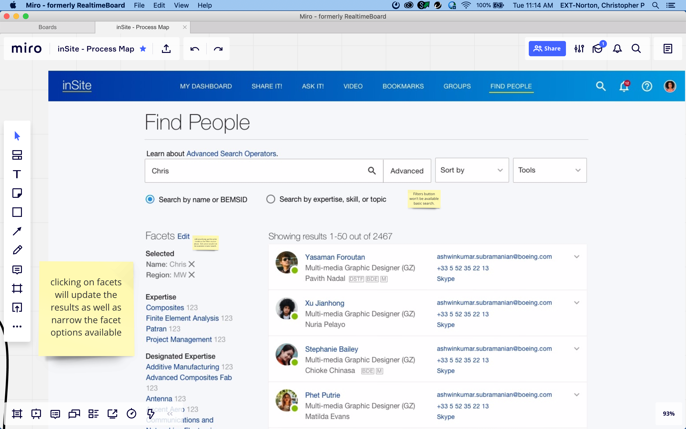
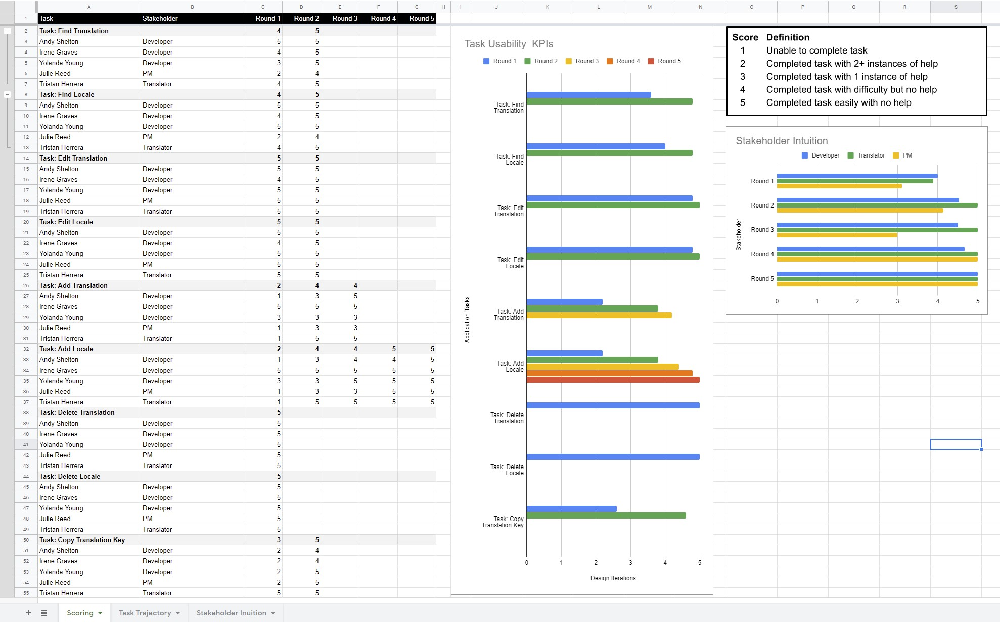
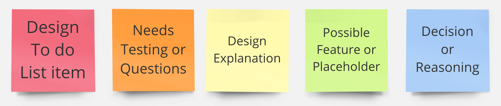
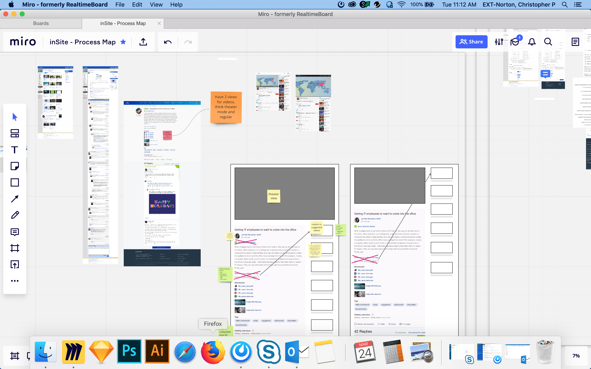
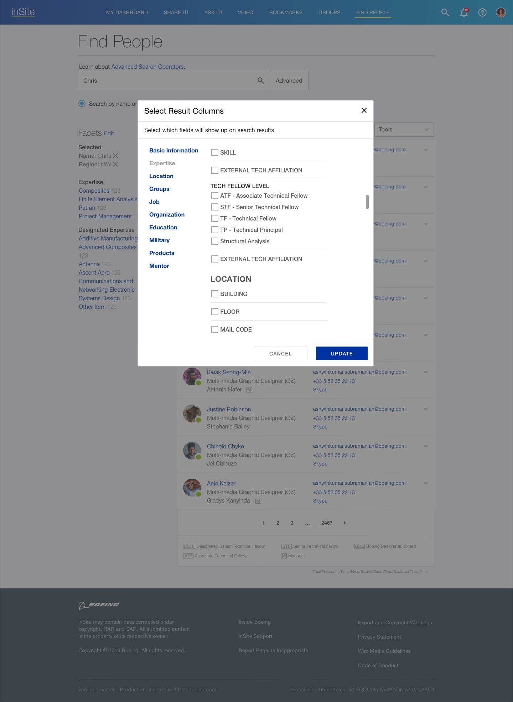
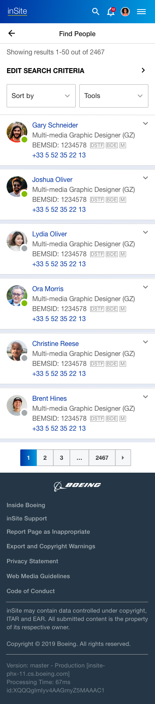

<!DOCTYPE html><html lang="en" id="top"><head><meta charset="UTF-8"/>
<meta name="viewport" content="width=device-width, initial-scale=1.0">
<meta http-equiv="X-UA-Compatible" content="IE=edge"/><title>Chris Norton: Designer</title><link rel="preconnect" href="https://fonts.googleapis.com">
<link rel="preconnect" href="https://fonts.gstatic.com" crossorigin><!--link(href='https://fonts.googleapis.com/css2?family=Open+Sans:wght@400;700&family=Source+Sans+3&display=swap', rel='stylesheet')--><link href="https://fonts.googleapis.com/css2?family=Arimo:ital,wght@0,400..700;1,400..700&amp;family=Source+Sans+3&amp;display=swap&amp;display=swap" rel="stylesheet"/><link rel="stylesheet" href="https://cdnjs.cloudflare.com/ajax/libs/font-awesome/6.5.0/css/all.min.css"/><link rel="stylesheet" href="styles/styles-2025.css"/><script src="js/polyfill.min.js"></script></head></html><body><div class="wrapper bg-light-1"><div class="page"><header><h1>Christopher Norton</h1><nav><a href="#">Home</a><a href="#projects">Projects</a><a href="#contactForm">Contact</a><a class="linkedin" href="https://www.linkedin.com/in/christopher-p-norton/" target="_blank"></a></nav></header><section class="bubble"><div class="page-nav"><a class="back" href="index.html#projects"><i class="fa fa-solid fa-angle-left" aria-hidden="true"></i>Projects</a></div><div class="content"><h2 class="has-subtitle">Boeing inSite</h2><p>Social Media Platform</p><div class="tags"><div class="tag ux">UX</div><div class="tag ui">UI</div><div class="tag uxr">UXR</div><div class="tag redacted">Limited</div></div><p></p><p></p><h4>Impact</h4><p>Improved communication between teams and preserved existing knowledge libraries.</p><div><h4>Problem Solving Summary</h4><ul class="timeline-horizontal"><li>Review current process</li><li>Examine personas, journey and context</li><li>User permissions and feature prioritization</li><li>Whiteboarding flows and wireframing</li><li>Prototyping</li><li>Usability testing</li><li>Development</li><li>Quantitative and Qualitative</li></ul><div><figure><figcaption>Example from another project, but same the same format was used.</figcaption></figure></div><div class="section"><h3>Project Goal</h3><p>Create feature parity for mobile and modernize look and feel of the UI. Also  improve flows for finding team members, forming groups, posting news, asking questions, and organizing team events.</p><h3>Project Results</h3><p>My involvement ended shortly after releasing the new flows but we saw very few users switching back to the old interface once they elected for the update. The update included new components based on Material UI as well as workflows with fewer steps.</p><p><strong>Impact: </strong> Improved communication between teams and preserved existing knowledge libraries.</p><h3>What Was Fixed</h3><p>We updated the inline styles to use the Boeing design system based on Material Design suggestions and added new mobile equivalent examples to the pattern library. We built in a feedback loop with tools that allowed the user to elect the UI update and send feedback to the team.</p><h3>What was Learned</h3><p>The expectation from above was to just, "throw some UX on it,"  to make it work in mobile but several flows were fundamentally broken on desktop. Things like being able to flag/report inappropriate posts for example were non-existent.  Also not all mobile features needed parity. The level of security needed to be installed on phones was a blocker for large portions of intended personas which were limited by permissions to desktop use without installing company policies on personal phones. Obviously that wasn't going to fly.</p></div></div><h3>What I Did</h3><div class="project-content-grid"><div class="section"><h4>Review current process</h4><p>When I joined development was driven by full feature parity of desktop to mobile so just a list of pages the team was moving through and checking off that it could be viewed on mobile. So the hope for me was to just convert existing desktop screens into mobile equivalents. This was not going well. Users were still struggling to complete tasks in the system.</p><h4>Examine personas, journey and context</h4><p>I took a step back to look at things holistically because Boeing has a lot of security baked deep into their process.  At one point I had 3 different laptops to be able to work with different teams around the org because everything as so roped off. Working with applications via mobile required a company phone or installing invasive company policies on personal devices which created a huge amount of friction and made feature adoption on mobile very unlikely.</p><p></p><h4>User permissions and feature prioritization</h4><p>I examined permissions in context with the journey it really helped give the team perspective on prioritizing features.  Do we fix a broken flow in the desktop app and also spend time creating parity on the mobile app or do we release faster and just fix the broken desktop flow first to see if that even moves the needle?  Why build 2 things that don't work?  This new lens allowed the team to be more focused and intentional with a better chance at having a real impact- or at least learn faster.</p></div><div class="section"><h4>Whiteboarding flows and wireframing</h4><p>I collaborated with the product owner and the dev team using Miro to draw out some initial flows and verify that ideas were even possible.  It also helped balance the effort from the dev team to be able to walk through some of their technical limitations and compromise on trade-offs and design alternatives. The comment system was also really helpful in resolving a visual to-do list for design using existing problem screenshots.</p><p></p><h4>Prototyping</h4><p>I built out interactive high-fidelity prototypes using Sketch and Figma pulling in styles from the new design system and updating library components as needed.</p><p></p></div><div class="section"><p></p></div><div class="section"><h4>Usability testing</h4><p>I wrote and conducted remote usability testing with internal users.  I converted all the squishy feedback into metrics by charting feedback based on how much or how many times the user needed help to complete various tasks. I had done similar things for a Translations app for John Deere.</p><h4>Quantitative and Qualitative</h4><p>I also established a feedback loop allowing existing users to self-select and opt-in to upcoming releases to be able to provide feedback before rollouts would begin.  Rolling out with A/B testing also allowed us some danger metrics by seeing which users set their UI back after trying out the new system.</p><p></p></div></div></div></section><div class="page-nav"><a class="back" href="index.html#projects"><i class="fa fa-solid fa-angle-left" aria-hidden="true"></i>Projects</a></div></div></div></body>